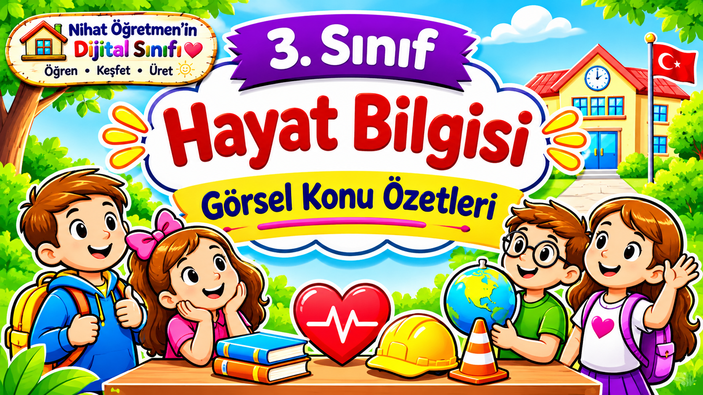

Görsel Konu Özetleri
A4'te kopya
Sayfa yönü
Seçimleriniz aşağıdaki A4 önizlemesine anında yansır. Tam Ekran yalnızca konu görselini gösterir.

Seçimleriniz aşağıdaki A4 önizlemesine anında yansır. Tam Ekran yalnızca konu görselini gösterir.